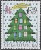

メニュー画面に戻る
メニュー画面に戻る  画像を見る
画像を見る  ショッピングカートを利用する
ショッピングカートを利用するLIST 2002/12

GZ42
＜略号＞
BK=切手帳，S/S=小型シート，［S］=シール式，CEPT=ヨーロッパ切手，□=無目打
( )内の数字は、種類の数
全体に取り消し線のあるものは、売り切れです。(2023.04.11)
品番のみに取り消し線があるものは、入荷待ちです。
青文字の品番は、再入荷（在庫僅）です。
最近売り切れの時期が早まっております。
ご注文はおはやめにどうぞ。
| 品番 | 品名 | 単価 |
|---|---|---|
| ＧＺ ３ | アメリカ グリーティング50州37c 50連 | 3960 |
| ＧＺ ４ | アメリカ Ｘマス 雪だるま [S]田連 | 330 |
| ＧＺ ５ | アメリカ Ｘマス 両面式平ＢＫ［S］ | 1585 |
| ＧＺ ６ | アメリカ Ｘマス 縮小版 ＢＫ［S］ | 1585 |
| ＧＺ ７ | アメリカ Ｘマス ＢＫの［S］田連 | 330 |
| ＧＺ ８ | アメリカ ハッピーバースデイ ［S］37c | 85 |
| ＧＺ ９ | アメリカ 無額面コイル 海岸 ［S］ | 30 |
| ＧＺ１１ | ミクロネシア 01 ロートレックS/S (2) | 980 |
| ＧＺ１２ | ミクロネシア 01 魚普通 $12.25 (1) | 3150 |
| ＧＺ１３ | ミクロネシア Ｘマス 名画 (5)＋S/S | 1560 |
| ＧＺ１４ | ミクロネシア テディベア４連 ハート型S/S | 810 |
| ＧＺ１５ | オーランド マラソン選手ホルメン(1） | 120 |
| ＧＺ１７ | オルダニー 医療［2］ 救急医療 (6) | 770 |
| ＧＺ１８ | アルゼンチン WWF 保護動物 田連 | 340 |
| ＧＺ１９ | アルメニア CEPT サーカス (2) | 360 |
| ＧＺ２６ | ボスニア CEPT サーカス (1) | 330 |
| ＧＺ２７ | ボスニア 消防活動 S/S | 290 |
| ＧＺ２８ | スルプスカ 考古学博物館の品 (4) | 550 |
| ＧＺ２９ | スルプスカ 建物普通 高額 (6) | 1630 |
| ＧＺ３２ | カナダ トロント証券取引所150年 (1） | 80 |
| ＧＺ３３ | カナダ ケベック交響楽団 (1) | 80 |
| ＧＺ３４ | カナダ Ｘマス 近代画と彫刻 (3) | 330 |
| ＧＺ３５ | カナダ Ｘマス 10、6、6枚入 (3) | 2270 |
| ＧＺ３７ | 中国 中国と韓国の武術 縦２連 | 50 |
| ＧＺ３８ | 中国 各地の博物館 (5) | 120 |
| ＧＺ４１ | 台湾 地方演劇 (4) | 310 |
| ＧＺ４２ | チェコ Ｘマス 聖ニコラス他 (2) | 120 |
| ＧＺ４３ | チェコ ＮＡＴＯサミット 凹 (1) | 85 |
| ＧＺ４４ | チェコ 普通大統領 6.40 凹 (1) | 50 |
| ＧＺ４５ | スロバキア 中国とスロバキアの城 ２連 | 180 |
| ＧＺ４５Ａ | スロバキア 中国とスロバキアの城４組シート | 720 |
| ＧＺ４６ | デンマーク 保存建築 民家 凹版 (5) | 825 |
| ＧＺ４８ | エストニア エリックの絵皿 田連 S/S | 270 |
| ＧＺ５０ | フエロー Ｘマス 教会の内外 (2) | 340 |
| ＧＺ５１ | フエロー 海洋 GY50 同図案 S/S | 470 |
| ＧＺ５３ | ドイツ 国際山岳年 募金つき (1) | 170 |
| ＧＺ５４ | ドイツ 寛大になろう (1) | 120 |
| ＧＺ５５ | ドイツ ユーロ通貨 (1) | 120 |
| ＧＺ５６ | ドイツ ドーナニ45年４月処刑 (1) | 120 |
| ＧＺ５７ | ドイツ CEPT ピエロ (1) | 120 |
| ＧＺ５８ | イギリス Ｘマス 花 ［S］(5) | 650 |
| ＧＺ６０ | グリーンランド Ｘマス (2) | 270 |
| ＧＺ６１ | グリーンランド Ｘマス ６組連 ［S］ＢＫ | 1550 |
| ＧＺ６２ | グリーンランド Ｘマス ＢＫから ［S］２連 | 270 |
| ＧＺ６３ | グリーンランド 女王普通凹版 0.50 (1) | 30 |
| ＧＺ６４ | グリーンランド 海洋 GY50 同図案 (2)＋S/S | 1470 |
| ＧＺ６５ | グァンジー Ｘマス (6)＋S/S | 1540 |
| ＧＺ６６ | ハンガリー Ｘマス (2) | 90 |
| ＧＺ６７ | アイスランド Ｘマス (2) | 340 |
| ＧＺ６９ | アイルランド Ｘマス 古画 (3) | 310 |
| ＧＺ７０ | イタリア 競輪選手ビンダ (1) | 100 |
| ＧＺ７１ | イタリア 彫刻「大虐殺」 (1) | 100 |
| ＧＺ７２ | イタリア ２大学 凹版 (2) | 210 |
| ＧＺ７３ | イタリア ピオ神父列聖 (1) | 100 |
| ＧＺ７４ | ジャージー 郵便ポストの歴史 (6)＋S/S | 1450 |
| ＧＺ７５ | ラトビア 文学作品の情景 (1) | 140 |
| ＧＺ７６ | ラトビア CEPT ピエロ (1) | 200 |
| ＧＺ７７ | ラトビア 航海家と帆船 (1) | 230 |
| ＧＺ７９ | リヒテン 看板の芸術 (3) | 840 |
| ＧＺ８０ | リトアニア 1620年の王と地図 (1) | 60 |
| ＧＺ８１ | リトアニア 文学博物館 (2) | 240 |
| ＧＺ８２ | ルクセンブルグ 自由憲章750年 (1) | 160 |
| ＧＺ８５ | マルタ サボテン (5) | 860 |
| ＧＺ８７ | モルドバ CEPT サーカス (1) | 320 |
| ＧＺ８８ | オランダ 児童福祉６連 S/S | 750 |
| ＧＺ８９ | オランダ 工業遺産10連 S/S | 830 |
| ＧＺ９０ | ノルウエー 19世紀の神父 凹版 (2) | 310 |
| ＧＺ９１ | ノルウエー Ｘマス 飾り ［S］ＢＫ | 1250 |
| ＧＺ９２ | ノルウエー Ｘマス ＢＫから ［S］２連 | 320 |
| ＧＺ９３ | ニュージーランド 週末の家 (6) | 260 |
| ＧＺ９４ | ニュージーランド Ｘマス(目打違い） ［S］ＢＫ | 430 |
| ＧＺ９５ | ニュージーランド Ｘマス(目打違い） ＢＫ単片 | 50 |
| ＧＺ９７ | パプア 英皇太后哀悼 S/S(3) | 1340 |
| ＧＺ９９ | ポルトガル 世界文化遺産 (8)＋S/S(4) | 1580 |
| ＧＺ１０４ | シンガポール 国際都市 (2)＋S/S(5) | 2970 |
| ＧＺ１０５ | ソロモン ガダルカナル戦60年 (4)＋S/S | 810 |
| ＧＺ１０６ | スエーデン Ｘマス 教会 ＢＫ | 1915 |
| ＧＺ１０７ | スエーデン Ｘマス 教会 ＢＫから田連 | 960 |
| ＧＺ１０８ | スエーデン Ｘマス マンガ ［S]ペーン | 1090 |
| ＧＺ１０９ | スエーデン Ｘマス マンガ その田連 | 550 |
| ＧＺ１１０ | スエーデン Ｘマス マンガコイル (1） | 110 |
| ＧＺ１１１ | タイ 国際文通 食器 (4)＋S/S | 340 |
| ＧＺ１１２ | タイ 切手展［1］ 料理 (4)＋S/S | 330 |
| ＧＺ１１３ | スイス Ｘマス 教会型の飾り (1) | 125 |
| ＧＺ１１４ | スイス 2003年世界スキー大会 (1) | 125 |
| ＧＺ１１５ | スイス 国連加入 (1) | 125 |
| ＧＺ１１６ | スイス 切手の日 湖と鳥 (1) | 100 |
| ＧＺ１１７ | スイス 冬の募金 バラの花 (5) | 945 |
| ＧＺ１１９ | スイス 無額面 欧州用、海外用 ［S］(2) | 435 |
| ＧＺ１２２ | トルコ 楽器 バイオリンなど (2) | 150 |
| ＧＺ１２３ | トルコ 大型商船 (4) | 310 |
| ＧＺ１２４ | ユーゴスラビア CEPT サーカス (2) | 360 |
ショッピングカートを利用する 店主の『雑記帳』を開いてみる メニュー画面に戻る
店主の『雑記帳』を開いてみる メニュー画面に戻る